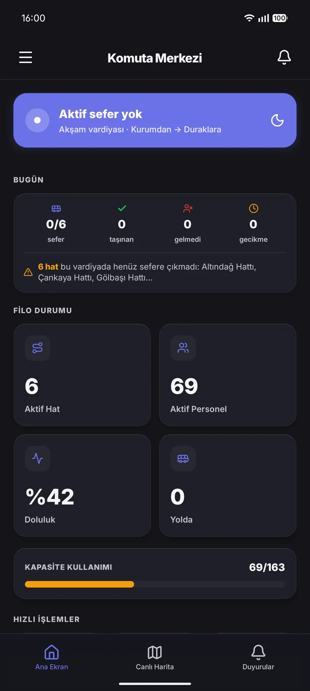
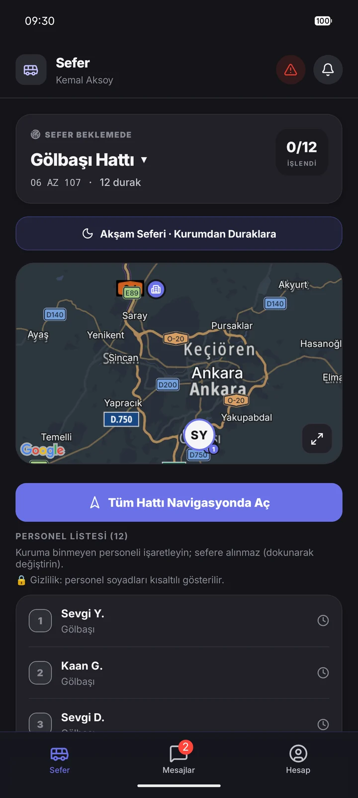
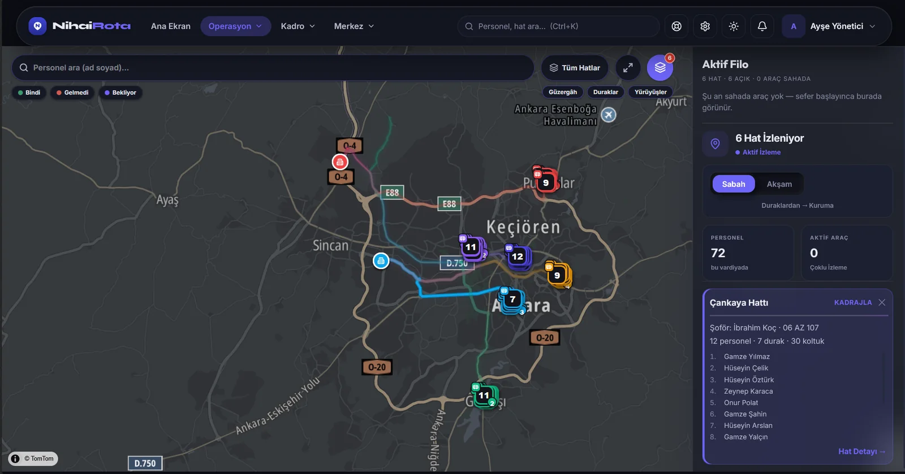

Kimler için
Servisi kullanan da, işleten de aynı sistemde
Personelini taşıtan kurum ile filoyu işleten servis firması aynı hattı, aynı anda, kendi ekranından görür. İki taraf davet koduyla eşleşir.
Servisi kullanan kurumlar
Personel kayıtları ve ev adresleri tek yerde; hangi personelin hangi araçta olduğu anlık görünür. Yoklama arşivi, doluluk analizi ve boş koltuğun aylık maliyeti raporlanır.
Servis firmaları
Şoför kadrosu ve araç havuzu, her araca sabit şoför; muayene, sigorta, ehliyet, SRC ve psikoteknik takibi. Müşteri sözleşmeleri ve sefer başı / koltuk başı / sabit aylık hakediş.
İki platform
Sahada mobil, ofiste web


Dört rol, tek uygulama
Yönetici operasyonu cebinden yönetir, personel servisini canlı izler, şoför rotayı sürüp yoklama alır, servis firması filosunu takip eder.
Mobil uygulamayı inceleyin
Yönetimin merkezi
Hat ve güzergâh tanımları, canlı filo haritası, personel kadrosu, sefer arşivi, raporlar; firma tarafında araç, belge, müşteri ve hakediş.
Web panelini inceleyinNasıl çalışır
Kurulumdan ilk sefere dört adım
Kurumu tanımlayın
Varış merkezini ve hizmet günlerini girin. Hafta sonu çalışan kurumlar için de tarife serbesttir.
Personeli ekleyin
Adresleri haritadan işaretleyin veya toplu içe aktarın; sistem en yakın uygun hattı önerir.
Güzergâhı optimize edin
Durak sırası otomatik çıkar, hattı şoföre atarsınız. Doluluk ve kapasite anında görünür.
Sefer başlasın
Şoför navigasyonla ilerler ve yoklama alır; kurum canlı izler, sonunda rapor ve arşiv oluşur.
Öne çıkanlar
Operasyonu canlı tutan çekirdek
Canlı araç takibi
Sefer başladığı anda araç haritada görünür; personel servisinin nerede olduğunu telefonundan izler.
Güzergâh optimizasyonu
Durak sırası personel adreslerinden otomatik hesaplanır; sabah en uzaktan başlar, akşam tersine döner.
Tek dokunuş yoklama
Şoför her durakta bindi/gelmedi işaretler; doluluk ve sefer arşivi anında güncellenir.
Anlık bildirim ve duyuru
Servis yaklaştı, sefer iptal edildi, hat duyurusu — hepsi telefona anlık push olarak düşer.
Çevrimdışı dayanıklılık
Kapsama dışında kalınsa da yoklama işaretleri cihazda birikir, ağ gelince otomatik senkronlanır.
Tatil, iptal ve şoför değişikliği
Tek günlük istisnalar haftalık tarife bozulmadan tanımlanır; o gün personel takviminde kapalı görünür.
Belge takibi
Muayene, sigorta, ehliyet, SRC ve psikoteknik bitişleri; 30 günden az kalan amber, süresi geçen kırmızı uyarır.
Sözleşme ve hakediş
Sefer başı, koltuk başı veya sabit aylık — aylık alacak gerçekleşen seferden hesaplanır, CSV olarak dışa aktarılır.
Kurumlar arası veri yalıtımı
Her kurumun verisi veritabanı seviyesinde ayrılır; bir kurum diğerinin personelini, hattını veya raporunu göremez.
Boşa giden kapasite
Raporlar, boş koltukların nerede olduğunu ve aylık tutarını gösterir; uzun süredir binmeyen personeli ayrıca listeler.
Otomatik hat planlama
Hattı olmayan personeli coğrafi olarak kümeler, boştaki araç ve şoförü atar. Önce öneri görürsünüz; siz uygulayana kadar hiçbir şey değişmez.
Uygulama içi mesajlaşma
Hat bazlı sohbet, kurum duyuruları için yalnız-okuma kanal ve servis firmasına doğrudan destek hattı.
Sık sorulanlar
Merak edilenler
Kurumunuzda başlatın
Android uygulaması hazır, web paneli tarayıcıdan çalışıyor. Kurum hesabı açmak veya sistemi yerinde görmek için bize yazın.
Kurulumda istendiğinde bilinmeyen kaynaklardan kuruluma izin verin; sonrasında bu izni kapatabilirsiniz. APK Vectonis tarafından imzalanmıştır.